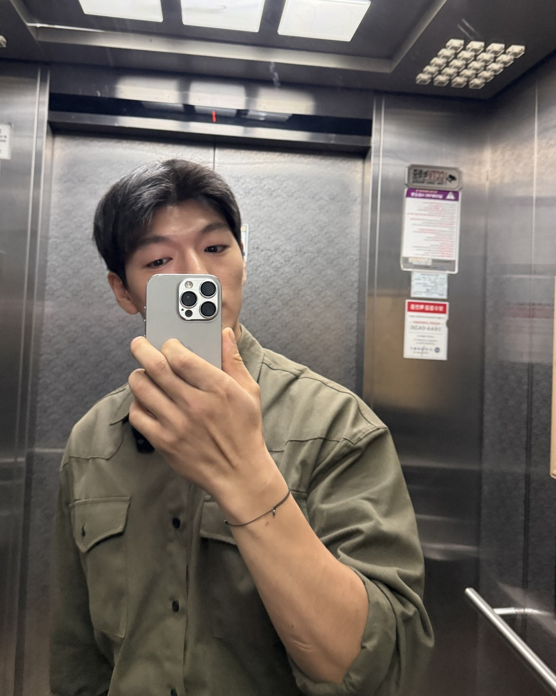
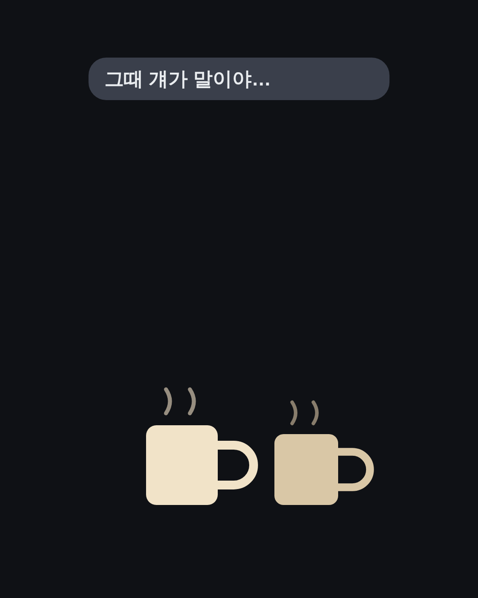
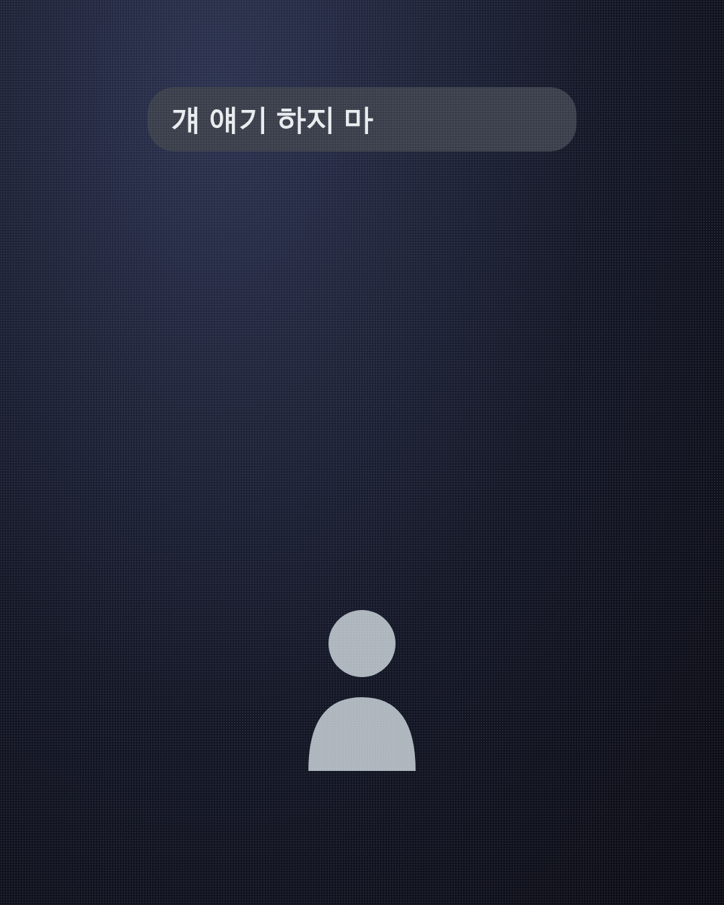
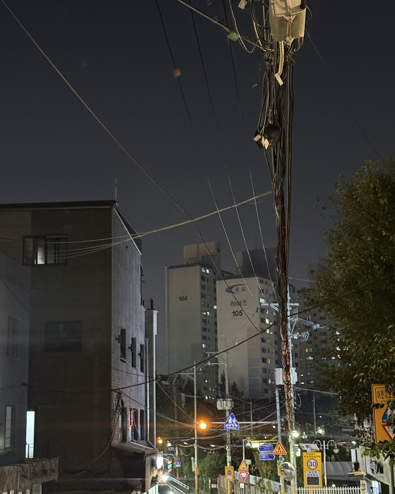
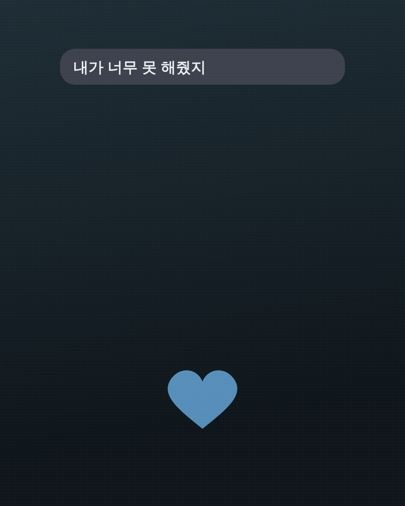
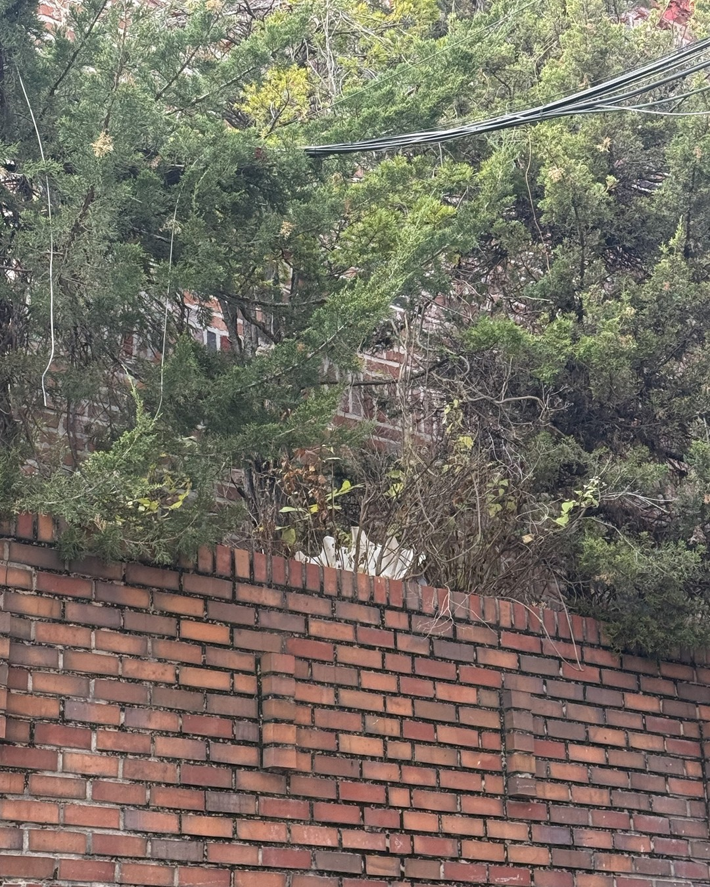
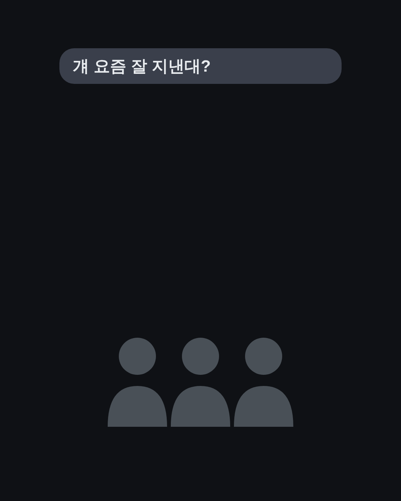
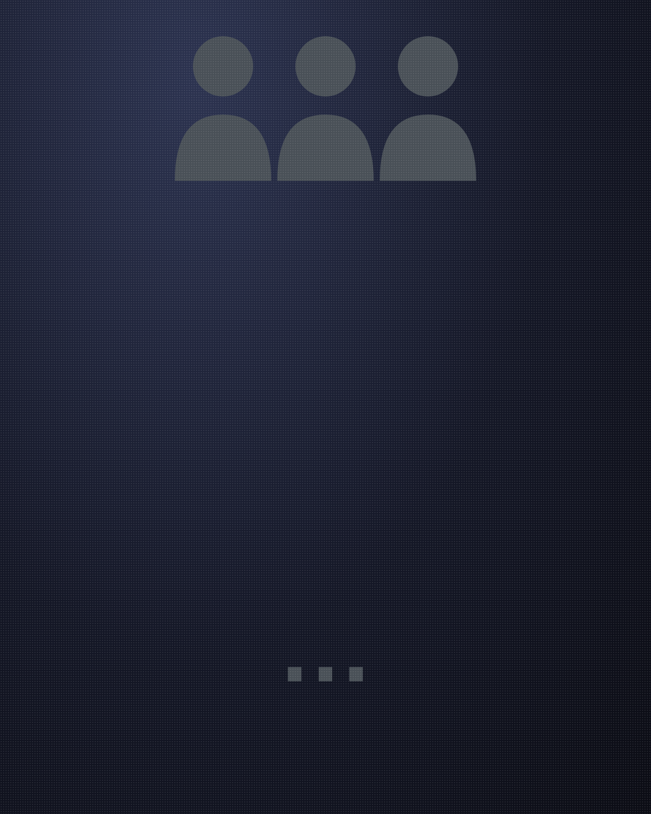
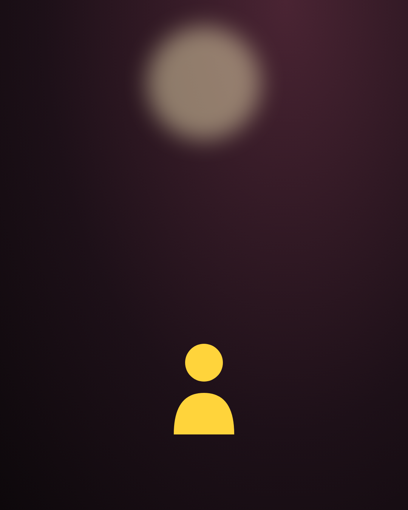
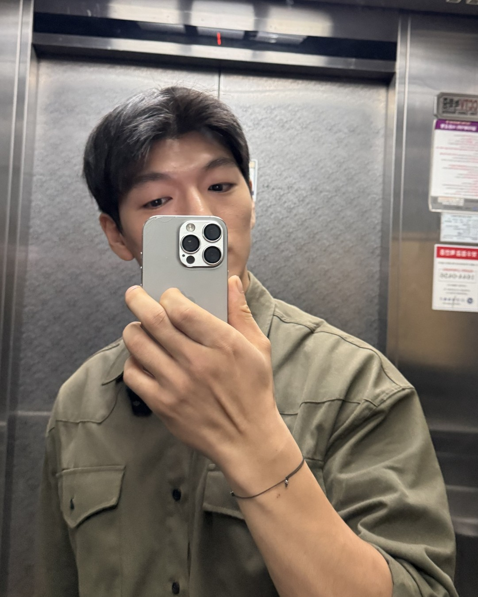

헤어진 남자가 친구들한테
당신을 이렇게 말해요
(당신 앞에선 절대 안 하는 말.)
1/14
@mszexc
넘겨보세요 →

헤어지고 나면
남자는 친구들 앞에서 그녀 얘기를 해요.
(술 한잔 들어가면 꼭요.)
2/14
@mszexc
남자들끼리 하는 말 #62
그 한마디를 들으면
그 남자 마음이 어디쯤인지 보여요.
3/14
@mszexc
남자들끼리 하는 말 #62

첫 번째.
"걔 얘기 하지 마."
(아직 안 끝났어요. 꺼내면 흔들리니까요.)
4/14
@mszexc
남자들끼리 하는 말 #62

두 번째.
"걔는 좋은 애였어."
(정리가 끝났어요. 미안함만 남은 말이에요.)
5/14
@mszexc
남자들끼리 하는 말 #62

세 번째.
"내가 너무 못 해줬지."
(후회예요. 마음이 아직 그녀 쪽에 있어요.)
6/14
@mszexc
남자들끼리 하는 말 #62

네 번째.
"이제 아무렇지도 않아."
(굳이 말한다는 건, 아직 아무렇지 않지 않은 거예요.)
7/14
@mszexc
남자들끼리 하는 말 #62

다섯 번째.
"걔 요즘 잘 지낸대?"
(친구한테 소식을 묻는 건, 아직 궁금하다는 뜻이에요.)
8/14
@mszexc
남자들끼리 하는 말 #62

그러면 친구들은 이렇게 받아쳐요.
"너 아직 못 잊었네."
(친구들은 다 알아요. 본인만 아니라고 해요.)
9/14
@mszexc
남자들끼리 하는 말 #62

반대로 진짜 끝난 남자는
그녀 얘기를 아예 안 해요.
(욕도 칭찬도 없어요. 그냥 화제가 안 돼요.)
10/14
@mszexc
남자들끼리 하는 말 #62
그 말이 건너 들려와도
연락할 이유로 삼지는 마세요.
(친구 앞에서 하는 말은, 아직 결정이 아니에요.)
11/14
@mszexc
남자들끼리 하는 말 #62

내가 할 수 있는 건 하나.
내 하루를 잘 사는 것.
(남자가 제일 흔들리는 건, 잘 지낸다는 그녀 소식이에요.)
12/14
@mszexc
남자들끼리 하는 말 #62

헤어진 남자의 진심은
당신 앞이 아니라, 친구 앞에서 나와요.
13/14
@mszexc
남자들끼리 하는 말 #62

이것만 기억하세요.
아무 말도 없는 게, 진짜 끝난 거예요.
남자가 하는 말의 뜻은 전자책 1·2권에 · 프로필 링크에서 무료로 받아보세요
14/14
@mszexc
남자들끼리 하는 말 #62